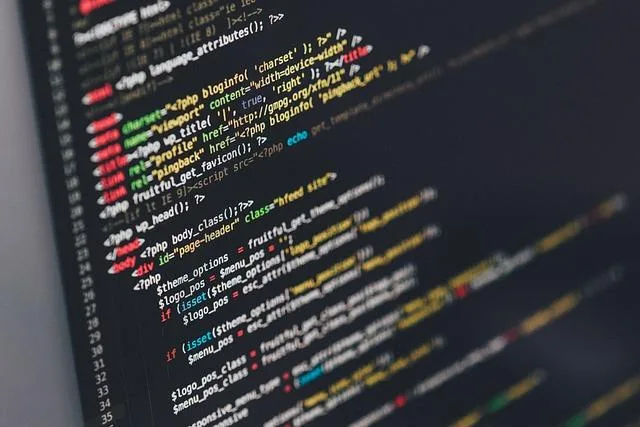

WarningDocumentationdeep scan readyPrevious page: WarningIndex page: DocumentationNext page: deep scan readyShell, Default Interactive Shell, Hidden Text Attacks

Security Warning! Copy/Paste Attack - What you think you copy might not be what you are really copying!
 OOPS!
They tricked me to install MALWARE! Clipboard Hidden Text Attacks
explained
OOPS!
They tricked me to install MALWARE! Clipboard Hidden Text Attacks
explained


Hidden Text Attacks
What are Hidden Text Attacks?
Users on the Internet often encounter text snippets which are ready to be copied and to be used in a console or some. This can be very dangerous and users have to be very careful and vigilant when using such "shortcuts". That is because what you think you copy might not be what you will actually copy. Malicious modification of the clipboard can happen.
This issue is unspecific to Kicksecure and probably every user on every operating system vulnerable to this.
Demonstration of a Hidden Text Attack
The following demonstration is completely safe. It should be compatible, JavaScript enabled, disabled and even with Tor Browser maximum security slider setting.
1 Take a good look at the following copy to paste box in step 3.
Consider this example. Looks innocent enough, just checking if there's updates in your Linux packages. Would you copy it?
2
The copy to paste box contains content sudo apt update,
right? Yes.
3 Copy the following into the clipboard by pressing the copy button.
sudo apt install malware1
sudo apt install malware2
sudo apt update
4 Paste the text into a text editor of your choice.
5 Here is the surprise.
- A) What you think you copied. 1 line.
sudo apt update- B) This is what you actually copied. 5 lines.
sudo apt install malware1
sudo apt install malware2
sudo apt update6 Done.
The hidden text attack demonstration has been completed.
Hidden Text Attacks Discussion
Fortunately there's no Linux package called "malware". But consider a command that download malware and executes it command or something else such as deletion command which could harm your system.
What makes matters worse is the added auto-execution risk when pasting the command. This is because instead of just copying 1 line, multiple lines have been copied. At least in the past in many terminal emulators, commands have been automatically executed. Question Stop terminal auto executing when pasting a command is evidence for this.
The terminal installed by default in Kicksecure (qterminal at time of writing) comes with an Unsafe Paste Warning Popup when attempting to paste multiple lines.
Of course this specific example can be detected easily as soon as you enter the code into a text editor. However if you simply copy-paste this command into your terminal and press enter before you read it then you might be in some big trouble.
If you copy from a untrustworthy website into you might copy some invisible (not displayed) control characters which could lead to compromises. This is elaborated on the Invisible Malicious Unicode Risks wiki page.
When is a website untrustworthy? Even if a website was trustworthy in the past it should always be considered potentially compromised as hacks could happen any time.
So please be very vigilant.
As you can see the text which you are copying may not be what you expect. A variety of available text-based attacks make the portion of the text invisible to even the most observant users. If the website you are copying the command from becomes compromised or simply is malicious you can be easily tricked into running unexpected code. This can be prevented by pasting the command into a text editor before executing it. This attack is even simpler if the website features a helpful button which lets you easily copy the command into your clipboard.
This quote is from Filip Borkiewicz (0x46.net), chapter "Hidden text attacks". A very helpful article about the dangers of random text pasting.
Protection from Hidden Text Attacks
There are at least two way in which a user can protect oneself from hidden text attacks.
Safe Copy
1 Copy from a website.
2 Paste into a graphical text editor.
3 Save the as a local text file.
4 Scan the file for malicious unicode.
unicode-show can be useful.
stdisplay tools can remove unicode from files.
5 Understand the copied commands to be run.
Ideally, user should only execute commands which are fully understood by the user. Otherwise, system compromise is at risk. See also shell scripting.
The second best thing would be only executing commands from trusted sources. But what is a trusted source? Websites on the internet might get compromised by adversaries at any time.
6 Copy from the from the local text file.
7 Paste the command into the terminal and execute.
8 Done.
Commands have been unicode scanned, sanitized and reviewed in a text editor before being executed.
Manually
1 Look at the website.
2 Read the commands and manually write them into a terminal.
3 Done.
Commands have been typed manually instead of copying and pasting.
The disadvantage of this method is that during manually writing the commands, mistakes are often introduced by users.
The disadvantage of these methods is obviously that it is much more cumbersome than a simple copy and paste procedure. A simpler and secure way to use copy/paste has yet to be researched.
Further reading:
- https://security.stackexchange.com/questions/51093/why-do-gui-terminals-allow-the-pasting-of-control-characters
- https://security.stackexchange.com/questions/249586/simple-way-to-safely-paste-text-from-website-into-terminal
Default Interactive Shell
The user can change their default shell depending on their personal preference. This chapter documents how to configure using bash or zsh by default.
1 Notices.
- Default shell: Since version
17, Kicksecure default shell has been changed frombashtozsh. - Optional customizations: All steps are optional user customizations.
2 Platform specific notice.
- Qubes users: Should be done in Template.
- Kicksecure users: No special notice.
3 Select your shell.
Zsh
A) Enable Zsh for account user.
sudo chsh --shell /usr/bin/zsh user
B) Enable Zsh for account root.
sudo chsh --shell /usr/bin/zsh root
C) Enable Zsh for account sysmaint.
(Only if using user-sysmaint-split.)
sudo chsh --shell /usr/bin/zsh sysmaint
D) Optional: Enable Zsh developer prompt.
sudo touch /etc/zsh/dev
bash
A) Enable bash for account
user.
sudo chsh --shell /usr/bin/bash user
B) Enable bash for account
root.
sudo chsh --shell /usr/bin/bash root
C) Enable bash for account
sysmaint. (Only if using user-sysmaint-split.)
sudo chsh --shell /usr/bin/bash sysmaint
4 Other customization.
Optional: All other customization such as changing the PS1 are unspecific to Kicksecure and need to be done as per Self Support First Policy for Kicksecure.
5 Reboot required. [1]
sudo reboot
6 Additional developer information.
Users can skip this.
7 Done.
The default interactive shell configuration has been updated.
Resources
- another attack demonstration: http://thejh.net/misc/website-terminal-copy-paste
- https://www.malwarebytes.com/blog/news/2025/03/fake-captcha-websites-hijack-your-clipboard-to-install-information-stealers
See Also
- Invisible Malicious Unicode Risks
- IDN Homograph Attacks
- terminal
- Unsafe Paste Warning Popup
- virtual consoles
Footnotes
- Re-login.